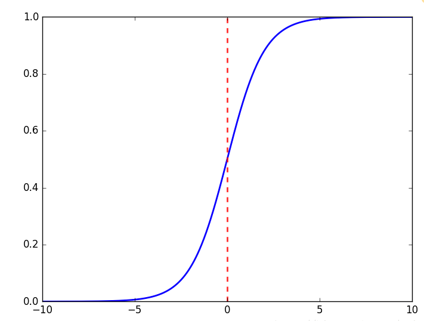
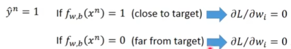

Logistic回归
Logistic回归
文章逻辑: 1. 描述分类任务 2. 假设样本分布后使用最大似然法解决二分类任务 3. 归纳得到朴素的分类模型 4. 基于朴素的分类模型推广得到
Logistic回归模型 5. 探讨Logistic回归的影响
首先我们描述一下分类任务
在分类任务(无论是二分类还是多分类)中, 我们在构建自己方法和模型时, 我们的任务往往可以抽象为如下三部分:
- 找到一个分类函数集合
对于二分类任务, 我们希望这个函数能够满足如下性质:
\[ f(x): x => \begin{cases} g(x) > mask & output = class 1\\\\ else & output = class 2 \end{cases} \]
我们想找到一个函数\(g(x)\), 在它输出的值大
mask时, 我们就将x分类为class 1, 否则我们就讲它分类为class 2.
- 找到一个损失函数
- 通过某个方法找到在函数集合中能让损失函数最小的那个函数, 或者说优化分类函数
考虑一个二分类任务
假设我们构建一模型,
来将输入分类为class 1或class 2.
找到一个分类函数集合
基于朴素的概率学, 我们如下定义我们的分类函数集合:
\[ g(x) = P(C_1|x) = \frac{P(x|C_1) P(C_1)}{P(x|C_1) P(C_1) + P(x|C_2) P(C_2)} \]
\[ f(x): x => \begin{cases} g(x) > 0.5 & output = class 1\\\\ else & output = class 2 \end{cases} \]
\(C_1\)是指当前输入属于
class 1这一事件\(C_2\)是指当前输入属于
class 2这一事件其中\(P(C_1)\)和\(P(C_2)\)为先验概率, 即对应类别在数据集中的占比.
模型中的未知量有: \(P(x|C_1)\)和\(P(x|C_2)\)
这是一个很符合直觉的模型, \(P(C_1|x)\)这一条件概率的物理含义为:
在我们接收到的输入为x时,
我们将其归类为class 1的概率. 由于这是一个二分类问题,
显然有\(P(C_2|x) = 1 - P(C_1|x)\).
我们希望我们的模型能够在x真实属于class 1时,
\(P(C_1|x)\)能够尽量的高;
而在x真实属于class 2时, \(P(C_2|x)\)能够尽量的高.
引入高斯分布
为了方便讨论, 我们不妨假设我们的样本符合某一个分布, 然后我们就可以进一步的计算我们的模型——我们在这里假设我们的样本符合高斯分布(Gaussian Distribution), 即我们的样本的分布律符合以下公式:
\[ f_{\mu, \sigma}(x) = \frac{1}{(2\pi)^{D/2}} \frac{1}{|\sigma|^{1/2}} exp \{-\frac{1}{2} (x - \mu)^T \sigma^{-1} (x-\mu)\} \]
这是符合高斯分布的随机向量的概率分布函数
现在我们知道了样本的分布律. 那么, 从朴素的概率学出发, 我们可以使用最大似然法来拟合我们的模型.
引入最大似然法
在知道模型的分布律的情况下, 我们能够得到如下的似然函数:
\[ L(\mu, \sigma) = f_{\mu, \sigma}(x_1) f_{\mu, \sigma}(x_2)...f_{\mu, \sigma}(x_n) \]
似然函数的含义: 在已知分布律, 并给定均值和方差\(\mu, \sigma\)的情况下, 我们经过
n次采样得到手头的数据集(\(x_1, x_2, ..., x_n\))的概率有多大.
最大似然法的逻辑就是找到一组\(\mu, \sigma\), 让似然函数的取值最大, 然后我们就把这组\(\mu, \sigma\)当作真实分布的均值和方差, 或者说: 如果一个分布函数能够让我们最可能得到目前的数据集, 那我们就认为这个分布函数就是真实的分布函数. 用数学的语言复述一遍:
\[ \mu^*, \sigma^* = \mathop{\arg\max}\limits_{\mu, \sigma} L(\mu, \sigma) \]
根据期望和方差的定义, 我们可以得到\(\mu^*\)和\(\sigma^*\)的通式:
\[ \mu^* = \frac{1}{n} \sum\limits_{i=1}^{n} x_i \]
\[ \sigma^* = \frac{1}{n} \sum\limits_{i=1}^{n} (x_i - \mu^*)(x_i - \mu^*)^T \]
强调一下, 以上通式, 是在我们假定了样本分布符合高斯分布的情况下推出来的, 不能够被推广.
这里的最大似然法直接替代了我们在描述分类任务时
找损失函数和优化分类函数的两步.
得到朴素的分类模型
在引入了高斯分布和最大似然法后, 我们的朴素分类模型就完成了:
- 首先, 我们找到了一个分类函数集合:
\[ g(x) = P(C_1|x) = \frac{P(x|C_1) P(C_1)}{P(x|C_1) P(C_1) + P(x|C_2) P(C_2)} \] \[ f(x): x => \begin{cases} g(x) > 0.5 & output = class 1\\\\ else & output = class 2 \end{cases} \]
其中\(P(C_1)\)和\(P(C_2)\)为先验概率, 即对应类别在数据集中的占比.
- 然后通过最大似然发找到最优的分类函数(替代了找损失函数, 然后再优化分步骤)
通过最大似然法我们可以得到\(P(x|C_1)\)和\(P(x|C_2)\)的值分别为\(f_{\mu_1, \sigma_1}(x)\)和\(f_{\mu_2, \sigma_2}(x)\), 此时函数已经被确定, 或者说我们的模型完工了.
对没错, 这里有两个分布律, 两组不同的\(\mu, \sigma\).
属于不同类别的样本, 理应有不同的分布律.
在分类时, 我们将样本x输入f(x)函数,
然后就能够得到样本所属的类别.
调整朴素的分类模型
在实际使用的过程中, 我们往往会让不同类别的样本分布律共用一个\(\sigma\).
此时\(P(x|C_1)\)和\(P(x|C_2)\)的值分别为\(f_{\mu_1, \sigma}(x)\)和\(f_{\mu_2, \sigma}(x)\).
李宏毅并没有细说为什么
此时, \(\sigma\)可以通过以下方程计算得到:
\[ \sigma = \frac{1}{n} \sigma_1 + \frac{1}{n} \sigma_2 \]
数据集中, 属于
class 1的样本有n个, 属于class 2的样本有m个.
进一步思考
观察分类函数
\[ g(x) = P(C_1|x) = \frac{P(x|C_1) P(C_1)}{P(x|C_1) P(C_1) + P(x|C_2) P(C_2)} \]
分类函数虽然是指\(f(x)\), 但是本质上我们是在求\(g(x)\), 所以这里我们可能模糊了分类函数的概念. 如果你比较迷惑, 那我告诉你, 我们现在是在观察\(g(x)\).
\(g(x)\)经过简单运算, 可转化为如下形式:
\[ g(x) = P(C_1|x) = \frac{1}{1 + \frac{P(x|C_2)P(C_2)}{P(x|C_1)P(C_1)}} \]
此时如果我们令\(z = ln \frac{P(x|C_2)P(C_2)}{P(x|C_1)P(C_1)}\), 那么\(g(x)\)就可以化简为如下形式:
\[ g(x) = \frac{1}{1 + exp(-z)} \]
没错!
sigmoid函数出现了!!!
此时, 对于z, 我们将高斯分布的分布函数带入\(z = ln
\frac{P(x|C_2)P(C_2)}{P(x|C_1)P(C_1)}\)中,
差不多是这样的形式:
\[ \begin{align} & z = ln \frac{f_{\mu_1, \sigma}(x) P(C_1)}{f_{\mu_2, \sigma}(x) P(C_2)}\\\\ & \Rightarrow z = ln \frac{f_{\mu_1, \sigma}(x)}{f_{\mu_2, \sigma}(x)} + ln \frac{P(C_1)}{P(C_2)}\\\\ & \Rightarrow z = ln \frac{f_{\mu_1, \sigma}(x)}{f_{\mu_2, \sigma}(x)} + ln \frac{\frac{N_1}{N_1 + N_2}}{\frac{N_2}{N_1 + N_2}}\\\\ & \Rightarrow z = ln \frac{f_{\mu_1, \sigma}(x)}{f_{\mu_2, \sigma}(x)} + ln \frac{N_1}{N_2} \end{align} \]
其中\(N_1\)和\(N_2\)分别代表两类样本的总量.
然后, 我们可以将高斯分布的分布函数拆开, 也就是将\(f_{\mu, \sigma}(x) = \frac{1}{(2\pi)^{D/2}} \frac{1}{|\sigma|^{1/2}} exp \{-\frac{1}{2} (x - \mu)^T \sigma^{-1} (x-\mu)\}\)带入\(z\)中:
\[ z = \begin{matrix} \underbrace{ (\mu_1 - \mu_2)^T \sigma^{-1} } \\ w \end{matrix} x + \begin{matrix} \underbrace{ - \frac{1}{2} \mu_1^T \sigma_1^{-1} \mu_1 + \frac{1}{2} \mu_2^T \sigma_2^{-1} \mu_2 + ln \frac{N_1}{N_2} } \\ b \end{matrix} \]
\(\sigma = \sigma_1 = \sigma_2\)
这里比较跳跃, 你可能会对我们如何将高斯分布的分布函数带入,
然后化简得到以上公式比较迷惑. 如果你想搞清楚, 可以参考李宏毅2023机器学习的视频,
在这个视频的1:05:00你会看到你想要的.
如上式所示, 如果我们将公式的两部分分别替换为\(w\)和\(b\), 那么我们就将\(z\)变成了\(z = wx+b\), 这样我们就可以将一个复杂的公式简化为了一个简单的线性方程.
观察\(w\)和\(b\)替换的部分, 可以看出来, \(w\)和\(b\)都是由\((\mu_1, \mu_2, \sigma, \sigma_1, \sigma_2)\)组合计算得来的.
这个时候, 我们就会有一个朴素的想法, 比起求\((\mu_1, \mu_2, \sigma, \sigma_1, \sigma_2)\), 然后再计算出\(w\)和\(b\), 最终得到模型; 我们能不能直接去拟合\(w\)和\(b\)呢? 显然是可以的!!!
归纳总结(得到Logistic回归模型)
经过以上推理, 我们将模型变成了如下形式:
\[ \begin{align} g(x) = sigmiod(z) = \frac{1}{1 + e^{-z}}\\\\ z = wx + b\\\\ f(x): x => \begin{cases} g(x) > 0.5 & output = class 1\\\\ else & output = class 2 \end{cases} \end{align} \]
这就是
Logistic回归模型
此时我们只需要通过数据集回归拟合出\(w\)和\(b\), 我们就能够得出最终的模型.
将\(z\)化为\(z = wx+b\)会带来什么呢?
在上面的推论中, 我们是假定了高斯分布才最终将\(z\)归纳为\(z=wx+b\)的形式. 但是, 如果你假设样本是别的分布, 你最后也会得到一个类似的结果(也能将\(z\)归纳为\(z=wx+b\)). 所以我们令\(z = wx+b\)之后, 实际上是推广了我们的模型, 我们不再假设样本的分布, 从而得到了一个适用于所有分布的模型!
关于损失函数
Logistic回归有一个需要注意的点是:Logistic回归不能使用均方误差作为损失函数,
需要使用交叉熵作为损失函数!
如果我们使用均方误差会怎样呢?
模型的局方误差:
\[ L(f) = \frac{1}{2}\sum\limits_{n} (f_{w,b}(x^n) - \hat{y}^n)^2 \]
求偏导:
\[ \frac{\partial(f_{w,b}(x) - \hat{y})^2}{\partial w_i} = 2(f_{w,b}(x) - \hat{y})f_{w,b}(x)(1-f_{w,b}(x))x_i \]
此处再给出sigmoid函数的图像:

观察偏导和sigmoid函数图像, 我们会发现:

当\(\hat{y}^n = 1\)时:
- 如果此时\(f_{w,b}(x^n) = 1\), 则说明此时模型已经达到最优, 此时由于偏导为零, 模型不会进一步更新;
- 如果此时\(f_{w,b}(x^n) = 0\), 则说明此时模型距离优化目标很远, 此时模型理应继续更新, 但是此时由于偏导数也为零, 因此此时模型反而也不会更新.
综上, 如果Logistic模型使用均方误差为损失函数,
那么如果我们在初始化权重时距离优化目标较远,
那么我们的模型将无法被进一步优化,
所以我们认为Logistic模型不能使用均方误差作为损失函数.